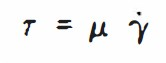
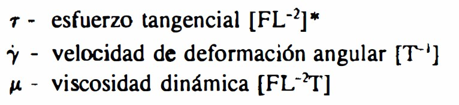
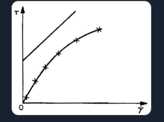

Unidad 5: Ecuaciones Constitutivas
Relación esfuerzo–deformación, elasticidad lineal y aplicaciones: ecuación de Navier-Cauchy y Navier-Stokes.
Contenido de la Unidad
5.1 Ecuación generalizada de esfuerzo de Hooke
Relación constitutiva lineal entre esfuerzos y deformaciones. Forma tensorial (Lamé) y propiedades de simetría del tensor elástico.
La ley de Hooke se define en la mecánica de medios continuos como la ecuación constitutiva fundamental para materiales con comportamiento elástico lineal. Este principio establece que, dentro del rango elástico, las deformaciones sufridas por un cuerpo son directamente proporcionales a las solicitaciones o esfuerzos aplicados.
A continuación, se presenta una descripción técnica y profesional de sus componentes y formulación generalizada:
1. Definición y Alcance Cinematático
La ley de Hooke describe la relación entre el tensor de esfuerzos de Cauchy \((\sigma_{ij})\) y el tensor de deformación infinitesimal \((\epsilon_{ij})\). En el contexto de la elasticidad lineal, se asume que los desplazamientos son infinitesimales, lo que permite que las descripciones lagrangiana y euleriana sean equivalentes.
2. Ley de Hooke Generalizada para Medios Isotrópicos
Para un sólido elástico, homogéneo, lineal e isótropo (SEHLI), la relación esfuerzo‑deformación se expresa matemáticamente mediante las constantes de Lamé \((\lambda\) y \(\mu)\) de la siguiente forma:
Donde:
- \(\sigma_{ij}\): es el tensor de esfuerzos.
- \(\epsilon_{ij}\): es el tensor de deformaciones infinitesimales.
- \(\delta_{ij}\): representa la delta de Kronecker, que actúa como operador identidad.
- \(\epsilon_{kk}\): corresponde a la dilatación volumétrica \((\Delta = \nabla \cdot \mathbf{u})\), que es la traza del tensor de deformación.
3. Constantes Elásticas y su Significado Físico
- Módulo de Rigidez \((\mu\) o \(G)\): relaciona los esfuerzos cortantes con las deformaciones angulares.
-
Módulo de Young \((E)\) y Relación de Poisson \((\nu)\): constantes comunes en ingeniería. La ley de Hooke puede reescribirse en función de ellas:
\[ \epsilon_{ij} = \frac{1+\nu}{E} \sigma_{ij} - \frac{\nu}{E} \sigma_{kk} \delta_{ij} \]
-
Relación entre constantes:
\[ \lambda = \frac{E \nu}{(1+\nu)(1-2\nu)} \] \[ \mu = G = \frac{E}{2(1+\nu)} \]
4. Consideraciones Energéticas
En el rango elástico, la relación esfuerzo‑deformación es lineal y el trabajo realizado durante el proceso se almacena como energía de deformación elástica. Este trabajo se expresa como: \(W_e = \frac{1}{2} \sigma_{ij} \epsilon_{ij}\), lo que representa la densidad de energía elástica en un punto del medio continuo.

LABORATORIO DE RESISTENCIA DE MATERIALES
5.2 Aplicaciones a problemas de Elasticidad lineal
Formulación de problemas típicos de elasticidad lineal: condiciones de frontera, desplazamientos, esfuerzos y compatibilidad.
Video (YouTube)
5.3 Ecuación de Navier-Cauchy
Ecuación gobernante en elasticidad lineal para el campo de desplazamientos en un sólido isotrópico, derivada de equilibrio + Hooke.
Propuesta Técnica y Académica: Marco Analítico de la Ecuación de Navier‑Cauchy
1. Justificación y Fundamentación
Dentro del estudio avanzado de la Mecánica del Medio Continuo, la ecuación de Navier‑Cauchy (o simplemente ecuación de Navier) se erige como el marco analítico fundamental para describir el comportamiento de un sólido elástico, homogéneo, lineal e isotrópico sometido a deformaciones infinitesimales. Esta expresión representa la síntesis de las leyes de balance de cantidad de movimiento con las propiedades constitutivas del material, permitiendo predecir la respuesta estructural bajo diversas solicitaciones mecánicas.
2. Estructura Matemática y Formulación
La ecuación de Navier‑Cauchy es una expresión vectorial que relaciona los desplazamientos \((u_i)\), las fuerzas de cuerpo \((B_i)\) y la densidad \((\rho)\) del material. Su formulación en términos de desplazamientos para un régimen dinámico es:
Donde se distinguen los siguientes parámetros fundamentales:
- \(\rho\): densidad del material en el estado natural.
- \(\lambda\) y \(\mu\): constantes elásticas de Lamé, donde \(\mu\) es equivalente al módulo de rigidez al corte.
- \(\nabla^2\): operador Laplaciano aplicado al vector de desplazamientos.
- \(\frac{\partial \epsilon_{kk}}{\partial x_i}\): gradiente de la dilatación unitaria o divergencia del desplazamiento.
3. Síntesis de Principios de la Mecánica
La validez profesional de esta ecuación radica en que integra tres pilares de la ingeniería mecánica:
- Ecuaciones de movimiento de Cauchy: que rigen el equilibrio dinámico basado en la Segunda Ley de Newton.
- Relaciones cinemáticas: que definen las deformaciones infinitesimales como el gradiente simétrico de los desplazamientos.
- Ley de Hooke Generalizada: que establece la proporcionalidad lineal entre esfuerzos y deformaciones en el rango elástico.
Al combinar estas expresiones, se obtiene una descripción única que permite resolver problemas elásticos determinando directamente el campo de desplazamientos, lo cual es técnica y operacionalmente más eficiente en el diseño de ingeniería que trabajar exclusivamente con tensores de esfuerzo.
4. Aplicaciones y Relevancia en Ingeniería
El dominio de la ecuación de Navier‑Cauchy es indispensable para el desarrollo de soluciones en:
- Elastodinámica: análisis de la propagación de ondas elásticas (longitudinales y transversales) en sólidos, fundamental para el diseño sismorresistente y la geofísica.
- Análisis Estructural: predicción de deflexiones y estados tensionales en componentes mecánicos y obras de infraestructura.
- Teoría de la Elasticidad: resolución de problemas de contorno mediante funciones de desplazamiento que garantizan el equilibrio y la compatibilidad del medio.
5. Perfil de Competencia Profesional
El manejo riguroso de esta formulación faculta al ingeniero para cuantificar fenómenos físicos complejos y transformar la naturaleza mediante diseños precisos, asegurando niveles óptimos de seguridad, eficiencia y economía en la práctica profesional de la ingeniería civil, mecánica e industrial.
Viscosidad dinámica
Esta es la propiedad que se manifiesta por la resistencia al desplazamiento relativo entre dos láminas de fluido provocado por la acción de un esfuerzo tangencial, de tal manera que se puede establecer una relación entre dicho esfuerzo y la velocidad de deformación del fluido de la siguiente forma

De lo anterior se ve que al aumentar la viscosidad se requerirá mayor esfuerzo para producir una velocidad de deformación dada, o bien para un esfuerzo dado existirá menor velocidad de deformación, como ocurre con la velocidad de flujo de un aceite espeso al circular por una tubería en comparación con la del agua, la cual como es menos viscosa fluye más rápidamente. Ahora bien, a este tipo de viscosidad se le llama newtoniana y tiene la propiedad de que la curva de esfuerzo tangencial contra velocidad de deformación es una línea recta, es decir, existe una relación lineal entre ambas cantidades,


Factores que influyen en la viscosidad
La viscosidad depende del tipo de fluido, de la presión isotrópica actuante y de la temperatura. Esto para fluidos newtonianos, ya que como se vio antes para no newtonianos influye también la velocidad de deformación \(\dot{\gamma}\); por ejemplo, para flujo unidimensional (en la dirección \(x\)).
5.4 Ecuación de Navier-Stokes
Ecuación del movimiento para fluidos newtonianos: conservación de cantidad de movimiento con términos viscosos y de presión.
La ecuación de Navier-Stokes es la ecuación diferencial fundamental que rige los problemas de la mecánica de fluidos, siendo válida tanto para líquidos como para gases. Según los documentos, representa una relación diferencial entre los tensores de esfuerzo y de velocidad de deformación para fluidos viscosos.
A continuación se detallan sus aspectos técnicos, formulación y variantes según las fuentes:
1. Definición y Origen Físico
La ecuación se deduce considerando que el movimiento de los fluidos viscosos resulta de esfuerzos de tipo distorsional, los cuales se relacionan con las velocidades de deformación mediante la ley de Newton. En esencia, es una expresión del principio de conservación de la cantidad de movimiento (segunda ley de Newton) aplicada a un medio continuo fluido.
2. Formulación Matemática General
La ecuación fundamental en forma vectorial se expresa como:
Donde:
- \(\rho\): Densidad del fluido.
- \(\mathbf{a}\): Vector aceleración.
- \(\mathbf{f}\) (o \(\mathbf{B}\)): Fuerzas de cuerpo por unidad de masa (como la gravedad).
- \(p\): Presión hidrostática.
- \(\mu\): Coeficiente de viscosidad dinámica.
- \(\mathbf{v}\): Vector velocidad.
- \(\nabla \cdot \mathbf{v}\): Divergencia de la velocidad, que representa la rapidez de cambio de volumen.
3. Casos Particulares y Simplificaciones
Debido a que la resolución matemática rigurosa de esta ecuación es extremadamente compleja, se suelen utilizar versiones simplificadas según el tipo de flujo:
-
Flujos incompresibles: Es el caso más común (frecuente en el estudio del agua), donde la densidad se considera constante y, por tanto, \(\nabla \cdot \mathbf{v} = 0\). La ecuación se reduce a:
\[ \rho \frac{D\mathbf{v}}{Dt} = \rho \mathbf{f} - \nabla p + \mu \nabla^2 \mathbf{v} \]
- Flujos laminares: Se presenta cuando las aceleraciones y fuerzas de inercia son despreciables frente a la viscosidad y el gradiente de presión.
- Flujos no viscosos (ecuaciones de Euler): Si los efectos de la viscosidad son despreciables frente a las aceleraciones, la ecuación se simplifica eliminando el término de viscosidad (\(\mu \nabla^2 \mathbf{v}\)), resultando en las ecuaciones de Euler.
4. Analogía con la elasticidad
Existe una semejanza directa entre la ecuación fundamental de la elasticidad y la de Navier-Stokes. Esta última se puede obtener a partir de la elástica realizando los siguientes cambios:
- Sustituir el módulo de rigidez (\(G\)) por la viscosidad dinámica (\(\mu\)).
- Sustituir la constante de Lamé (\(\lambda\)) por \(-\frac{2}{3} \mu\).
- Reemplazar el vector desplazamiento (\(\mathbf{s}\)) por el de velocidad (\(\mathbf{v}\)).
- Agregar el término del gradiente de presión (\(\nabla p\)).
5. Sistemas de coordenadas
Las fuentes proporcionan el desarrollo de estas ecuaciones en diferentes sistemas para facilitar el análisis según la geometría del problema:
- Coordenadas rectangulares (\(x, y, z\)): Útiles para flujos entre placas o conductos rectos.
- Coordenadas cilíndricas (\(r, \theta, z\)): Empleadas para flujos en tuberías circulares (como el flujo de Poiseuille) o entre cilindros concéntricos.
- Coordenadas esféricas (\(r, \theta, \phi\)): Utilizadas para problemas con simetría esférica.
Para resolver un problema de flujo completo, las ecuaciones de Navier-Stokes (que son vectoriales y aportan tres ecuaciones de componentes) deben resolverse simultáneamente con la ecuación de continuidad (conservación de la masa) para determinar las incógnitas de velocidad y presión.

Guía para el Trabajo de Investigación: Ecuaciones de Navier-Cauchy y Navier-Stokes
1. Formato de Presentación
El presente trabajo deberá elaborarse bajo criterios académicos y técnicos profesionales, siguiendo normas de citación reconocidas como APA (American Psychological Association) o un formato equivalente. La estructura mínima requerida será la siguiente:
Portada
La portada deberá incluir:
- Nombre de la institución educativa.
- Título del trabajo.
- Nombre completo de los integrantes.
- Nombre de la asignatura.
- Nombre del docente.
- Carrera.
- Fecha de entrega.
Índice
Se deberá presentar un índice estructurado con numeración y paginación correspondiente a cada apartado del documento.
Introducción
La introducción debe contextualizar la importancia de la Mecánica de Medios Continuos como una disciplina fundamental en la ingeniería civil, especialmente en áreas como:
- Diseño estructural.
- Geotecnia.
- Hidráulica.
- Mecánica de fluidos.
- Interacción suelo-estructura.
Asimismo, deberá explicarse cómo las ecuaciones diferenciales que gobiernan sólidos y fluidos permiten modelar fenómenos físicos reales utilizados en proyectos de ingeniería.
Desarrollo
El contenido principal del trabajo deberá desarrollarse conforme a los bloques temáticos establecidos en la investigación.
Conclusiones
Las conclusiones deberán resumir:
- Los principales hallazgos obtenidos.
- La importancia de las ecuaciones constitutivas.
- La analogía matemática entre sólidos elásticos y fluidos viscosos.
- La relevancia de estas ecuaciones en aplicaciones reales de ingeniería civil.
Bibliografía
Las referencias bibliográficas deberán presentarse correctamente citadas en formato APA o equivalente, utilizando libros, artículos científicos y documentos académicos confiables.
2. Desarrollo del Trabajo
A. Fundamentos Mecánicos Comunes
Principios de Conservación
La Mecánica de Medios Continuos se fundamenta en leyes físicas universales que gobiernan tanto sólidos como fluidos.
Conservación de la Masa
La masa no puede crearse ni destruirse dentro de un sistema continuo. Matemáticamente, este principio se expresa mediante la ecuación de continuidad:
Donde:
- \(\rho\): densidad.
- \(\mathbf{v}\): vector velocidad.
- \(\nabla \cdot\): operador divergencia.
En fluidos incompresibles, la ecuación se simplifica a:
Conservación de la Cantidad de Movimiento
Basada en la Segunda Ley de Newton:
En medios continuos se expresa mediante la ecuación de movimiento de Cauchy:
Donde:
- \(\boldsymbol{\sigma}\): tensor de esfuerzos.
- \(\mathbf{b}\): fuerzas de cuerpo.
- \(\dfrac{D}{Dt}\): derivada material.
Ecuación de Movimiento de Cauchy
Esta ecuación constituye la base general para el análisis tanto de sólidos deformables como de fluidos viscosos. A partir de ella se derivan posteriormente las ecuaciones específicas:
- Navier-Cauchy para sólidos.
- Navier-Stokes para fluidos.
B. Ecuación de Navier-Cauchy (Sólidos Elásticos)
Definición
La ecuación de Navier-Cauchy describe el comportamiento mecánico de materiales:
- Elásticos.
- Lineales.
- Homogéneos.
- Isótropos.
Es la ecuación fundamental de la teoría de elasticidad lineal.
Deducción
La ecuación surge de combinar:
- Las ecuaciones de equilibrio.
- La Ley de Hooke generalizada.
- Las relaciones deformación-desplazamiento.
La forma general es:
Variables Clave
Parámetros de Lamé
- \(\lambda\): primer parámetro de Lamé.
- \(G\) o \(\mu\): módulo de rigidez o módulo cortante.
Vector de desplazamiento
Representa el desplazamiento de una partícula del sólido respecto a su posición inicial.
Caso Estático
Cuando las aceleraciones son despreciables:
Este caso es ampliamente utilizado en análisis estructural y geotécnico.
C. Ecuación de Navier-Stokes (Fluidos Viscosos)
Definición
La ecuación de Navier-Stokes describe el movimiento de fluidos viscosos, tanto líquidos como gases. Representa la ecuación fundamental de la mecánica de fluidos.
Deducción
Se obtiene aplicando:
- Conservación de cantidad de movimiento.
- Ley de viscosidad de Newton.
Relacionando esfuerzos viscosos con velocidades de deformación del fluido. La ecuación general es:
Variables Clave
Viscosidad dinámica \(\mu\)
Representa la resistencia interna del fluido al movimiento.
Campo de velocidades \(\mathbf{v}\)
Describe la velocidad del fluido en cada punto.
Gradiente de presión \(\nabla p\)
Representa la variación espacial de presión.
Caso Particular: Fluidos Incompresibles
Para fluidos como el agua:
La ecuación simplificada es ampliamente utilizada en:
- Redes hidráulicas.
- Sistemas de tuberías.
- Canales abiertos.
- Ingeniería hidráulica.
D. Analogía y Comparación entre Navier-Cauchy y Navier-Stokes
La relación entre ambas ecuaciones constituye uno de los conceptos más importantes de la Mecánica de Medios Continuos.
Analogía Matemática
La ecuación de Navier-Stokes puede interpretarse como una extensión dinámica de la ecuación de Navier-Cauchy mediante las siguientes sustituciones:
- Sustitución del módulo de rigidez \(G \rightarrow \mu\). Donde \(G\) es la rigidez del sólido y \(\mu\) la viscosidad del fluido.
- Sustitución del vector desplazamiento \(\mathbf{u} \rightarrow \mathbf{v}\). Donde \(\mathbf{u}\) es el desplazamiento del sólido y \(\mathbf{v}\) la velocidad del fluido.
- Incorporación del gradiente de presión \(-\nabla p\). Este término aparece debido al comportamiento hidrostático y dinámico de los fluidos.
Interpretación Física
- En sólidos, las deformaciones generan esfuerzos elásticos.
- En fluidos, las velocidades de deformación generan esfuerzos viscosos.
Ambos fenómenos obedecen principios físicos semejantes, diferenciándose principalmente por la respuesta constitutiva del material.
3. Aplicaciones Prácticas en Ingeniería Civil
Aplicaciones de la Ecuación de Navier-Cauchy
Análisis de Estructuras
Se utiliza para:
- Flexión de vigas.
- Análisis de placas y cascarones.
- Deformaciones en estructuras metálicas y de concreto.
Permite calcular:
- Desplazamientos.
- Esfuerzos internos.
- Deformaciones.
Geotecnia
Aplicada en:
- Distribución de esfuerzos bajo cimentaciones.
- Asentamientos del suelo.
- Interacción suelo-estructura.
Es fundamental en el diseño de:
- Zapatas.
- Pilotes.
- Muros de contención.
Aplicaciones de la Ecuación de Navier-Stokes
Hidráulica
Permite analizar:
- Flujo en tuberías.
- Pérdidas de carga.
- Flujo laminar y turbulento.
Ecuación de Hagen-Poiseuille
Describe flujo laminar en tuberías circulares:
Diseño de Presas
Utilizada para:
- Análisis de filtraciones.
- Redes de flujo.
- Presiones hidrostáticas.
Aerodinámica en Ingeniería Civil
Aplicada al estudio de:
- Acción del viento sobre edificios.
- Capa límite atmosférica.
- Estabilidad estructural de puentes y torres.
4. Recursos Bibliográficos Recomendados
Los siguientes textos constituyen referencias fundamentales para el desarrollo de la investigación:
- Mecánica del Medio Continuo
- Introducción a la Mecánica del Medio Continuo
- Apuntes de Mecánica del Medio Continuo
Además, se recomienda consultar:
- Artículos científicos especializados.
- Manuales de elasticidad y mecánica de fluidos.
- Normativas técnicas aplicables a ingeniería civil.
Conclusión General
La Mecánica de Medios Continuos constituye una herramienta esencial en la ingeniería civil moderna, ya que permite modelar matemáticamente el comportamiento de sólidos y fluidos mediante principios universales de conservación.
Las ecuaciones de Navier-Cauchy y Navier-Stokes representan modelos fundamentales para comprender fenómenos estructurales e hidráulicos. A pesar de describir materiales distintos, ambas ecuaciones presentan una profunda analogía matemática basada en la relación entre deformación, esfuerzo y movimiento.
Su aplicación práctica resulta indispensable en áreas como:
- Diseño estructural.
- Geotecnia.
- Hidráulica.
- Aerodinámica.
- Mecánica computacional.
El estudio de estas ecuaciones permite desarrollar soluciones más seguras, eficientes y precisas para problemas reales de ingeniería civil.